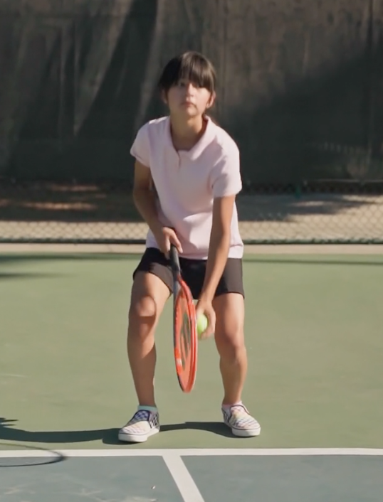

<ion-content scroll-y="false">
    <div class="splash">
        <div class="container">
            <div class="headline">
                <h1 class="helloUserTitle">Videos</h1>
                <ion-icon class="searchIcon" name="search"></ion-icon>
                <ion-icon *ngIf="showVideo" (click)="stopVideo()" name="close-outline" class="closeButton"></ion-icon>
            </div>

            <ion-list class="list">
                <ion-item class="item" (click)="startVideo()">
                    <ion-avatar slot="start" class="pic">
                        
                    </ion-avatar>
                    <p class="text">Tennisschlag</p>
                </ion-item>
                <ion-item class="item">
                    <ion-avatar slot="start" class="pic">
                        
                    </ion-avatar>
                    <p class="text">Ronaldo</p>
                </ion-item>
            </ion-list>

        </div>
    </div>
    
    <video [src]="safeUrl" autoplay muted loop id="myVideo" *ngIf="showVideo" webkit-playsinline playsinline></video>
    <video src="../../assets/videos/Tennis.mp4" autoplay muted loop id="trainVideo" *ngIf="showVideo" webkit-playsinline playsinline></video>
    <canvas id="canvasVideo" [style]="cssProberty" #canvasVideo class="canvas-overlay" *ngIf="showVideo"></canvas>
    <ion-icon *ngIf="showVideo" (click)="stopVideo()" name="close-outline" class="closeButton"></ion-icon>
    <ion-icon name="pause-circle-outline" (click)="videoStop()" class="playButton" *ngIf="showVideo && videoIsPlaying"></ion-icon>
    <ion-icon name="play-circle-outline" (click)="videoPlay()" class="stopButton" *ngIf="showVideo && !videoIsPlaying"></ion-icon>

</ion-content>
